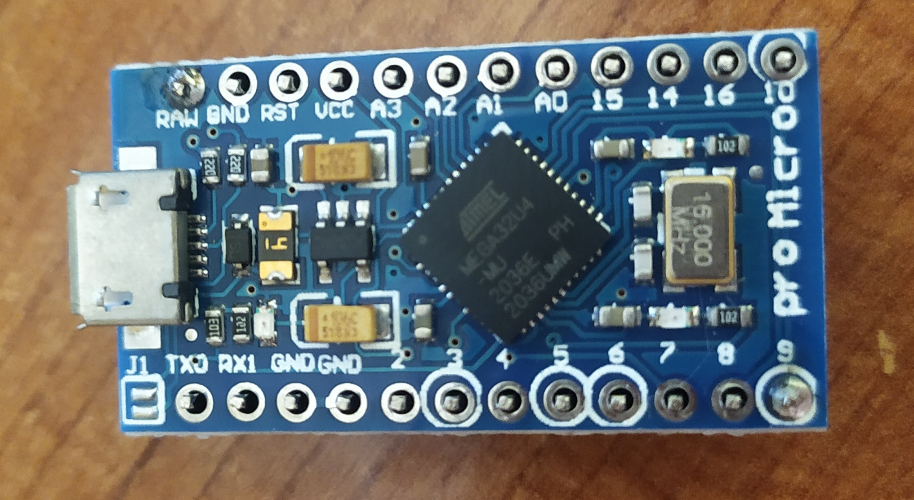
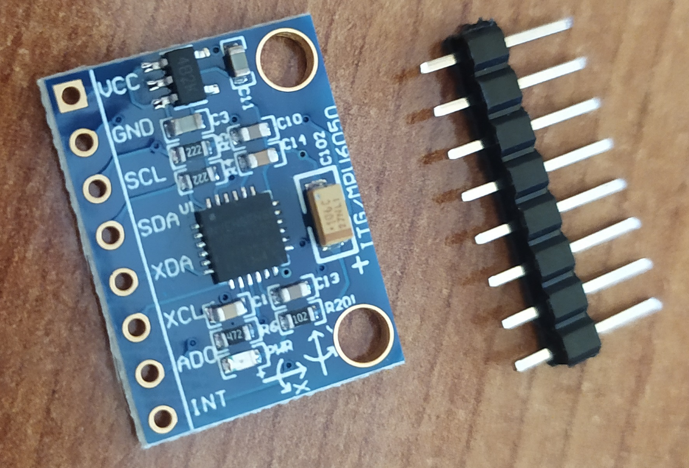
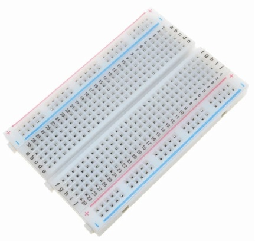
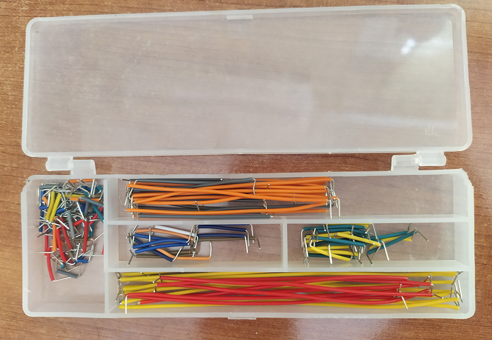

Arduino TrackIR
9 junio 2022
Hace poco adquirí un JoyStick para poder jugar a simuladores de aviones, tan buena fue la experiencia que me aficioné al simulador DCS World.
Consultando información y foros acerca del juego me topé con un post en el que varios jugadores compartían el hardware que utilizaban para conseguir una experiencia de juego mucho más inmersiva.
Entre los periféricos que comentaban había uno que llamó mi atención, el TrackIR. Este periférico permite seguir el movimiento de la cabeza del jugador y dar como salida un movimiento simulado en la cabina del avión. Su funcionamiento se basa en un emisor y un receptor infrarrojo, el emisor se coloca en la cabeza del jugador y tiene unos leds colocados estratégicamente. El receptor se ubícua en un lugar de cara al jugador, normalmente encima del monitor, y es capaz de interpretar las variaciones de señal del emisor como el movimiento de la cabeza del jugador.
El problema principal de este dispositivo es su coste, pues la versión más económica que he logrado encontrar ronda los 150€.
Primera solución
Probé a realizar algo parecido utilizando unos cuantos leds, una webcam y el software opentrack. Desafortunadamente, no lograba interpretar el movimiento de forma correcta y requería de muy poca luz en la habitación para no ocasionar errores.

La primera solución no ha dado buenos resultados por lo que habrá que seguir con la segunda opción.
Segunda solución
La mayoría de los simuladores permite mover la vista de la cabina a través de un movimiento de ratón por lo que trataré de simular este movimiento. Realizar un prototipo para esta solución será un poco más complejo y costoso. No obstante, me tomo esto como una inversión puesto que si no funciona la solución aun podré seguir conservando los componentes que podré utilizar para futuros proyectos.
La idea es la siguiente:
- Utilizar el microcontrolador ATMega32u4 (El cual puede ser utilizado como periférico de forma sencilla) para realizar movimientos del ratón.
- Utilizar un acelerómetro para leer los movimientos de la cabeza.
- Que el microcontrolador interprete las señales del acelerómetro y las convierta en movimientos reales del ratón.
Una vez definida la idea hará falta la lista de componentes:
- 1 Arduino Micro (ATMega32u4). Se puede utilizar otra siempre que tenga el microcontrolador ATMega32u4 e I2C.
Aliexpress 7.50€
- 1 Acelerómetro MPU6050.
Aliexpress 1.81€
- 1 Protoboard mediana.
Aliexpress 2.10€
- Cables de prototipo.
Aliexpress 3.80€
- 1 Cable USB-micro macho a USB-A Macho. Para conectar el Arduino al PC.
IMPORTANTE: puede ser posible que necesiteis un soldador de estaño para soldar los pines al Arduino y al acelerómetro. Se puede comprar en cualquier ferretería por un precio de unos 15€.
Con estos componentes se podrá crear un prototipo para comprobar si se puede continuar con esta solución.
La conexión del Arduino Micro con el acelerómetro MPU6050 se realiza mediante el protocolo I2C. Solo serán necesarios cuatro cables.
Los componentes montados en la protoboard se muestran a continuación. Un punto a aclarar es que la conexión SDA y SCL al MPU6050 se realiza por debajo de la placa y por este motivo no se aprecia en la fotografía.
Una vez montados los componentes en la protoboard habrá que crear el programa en el Arduino. Para ello se utilizará el Arduino IDE, se puede descargar a través de este enlace. Además, serán necesarias las librerías I2Cdev y MPU6050.
Para instalar las librerías tendrás que descargarte las carpetas junto con todos los elementos y ubicarlas en la ruta Documents\Arduino\libraries. Antes tendrás que tener instalado el Arduino IDE.
El código del programa puedes encontrarlo justo debajo de este parrafo. Para pasar el programa a tu Arduino deberás conectar tu Arduino Micro al ordenador a través de un cable USB, abrir el IDE de Arduino, ir a herramientas>placa y seleccionar Arduino Micro. También tendrás que seleccionar el puerto en el que se encuentra el Arduino, para ello herramientas>puerto y seleccionar el puerto en el que esté el Arduino. Tras esto, pega el siguiente código y dale a "subir".
#include "I2Cdev.h"
#include "MPU6050.h"
#include "Wire.h"
#include <Mouse.h&rt;
//Constantes
const int mpuAddress = 0x68;
const int debug = false;
//MODIFICAR SI ES NECESARIO
const float dead_point = 0.0; //Para ajustar un margen de error. Si el ratón se mueve dejando el sensor en una superficie plana incrementar este valor una décima.
const float sensibility = 25; //establece la sensibilidad. Cuanto mayor sea este número más se moverá el puntero cuando se mueva la cabeza
const int invertX = -1; //si el ratón se desplaza en el eje X contrario habrá que invertirlo. 1 no invertir, -1 invertir.
const int invertY = -1; //si el ratón se desplaza en el eje Y contrario habrá que invertirlo. 1 no invertir, -1 invertir.
//Objetos
MPU6050 mpu(mpuAddress); //Your offsets: -2775 1497 1731 78 41 -64
//Variables
int ax, ay, az;
int gx, gy, gz;
float rot_x = 0, rot_y = 0;
float rot_x_prev, rot_y_prev, time_prev;
void setup(){
Serial.begin(9600);
Mouse.begin();
Wire.begin();
mpu.initialize();
if(mpu.testConnection() == false){
Serial.println("MPU fail");
delay(1000);
while(true);
}
}
void loop(){
mpu.getRotation(&gx, &gy, &gz);
int differenceTime = millis() - time_prev;
time_prev = millis();
rot_x = (gx / 131)*differenceTime / 1000.0 + rot_x_prev; //rotación en X
rot_y = (gy / 131)*differenceTime / 1000.0 + rot_y_prev; //rotación en Y
if(abs(rot_x) < dead_point) //si la rotación es menor al punto muerto no varía
rot_x = 0;
if(abs(rot_y) < dead_point)
rot_y = 0;
float differenceX = rot_x_prev-rot_x;
float differenceY = rot_y_prev-rot_y;
rot_x_prev = rot_x; //modifica los valores finales
rot_y_prev = rot_y;
int desplazarX = 0, desplazarY = 0;
if(differenceX > dead_point/10 | differenceX < -dead_point/10) //si la diferencia es mayor al punto_muerto/10 establece el desplazamiento del puntero
desplazarX = differenceX*sensibility;
if(differenceY > dead_point/10 || differenceY < -dead_point/10)
desplazarY = differenceY*sensibility;
Mouse.move(desplazarX*invertX, desplazarY*invertY);
if(debug){
//Serial.println("sensibility: " + String(sensibility));
Serial.println("gx: " + String(gx) + " gy: " + String(gy));
//Serial.println("rot_x: " + String(rot_x) + " rot_y: " + String(rot_y));
Serial.println("differenceX: " + String(differenceX) + " differenceY: " + String(differenceY));
//Serial.println("DesplazarX: " + String(desplazarX) + " DesplazarY: " + String(desplazarY));
}
}
Hay algunas variables que podrías tener que cambiar. Estas son invertX, invertY, sensibility y dead_point. Estas variables sirven para invertir el eje X, invertir el eje Y, ajustar la sensibilidad y ajustar la zona muerta de no movimiento. Después de algunos ajustes ya tendrás listo tu TrackIR listo para usar.
Como he dicho este prototipo ya es funcional y podría utilizarse para jugar. Sin embargo, voy a añadir unas pocas mejoras para poder hacerlo más versatil y cómodo. Estas mejoras son las siguientes:
- 1 botón para reset. Cuando se pulse el botón se regresará automaticamente al centro de la pantalla o al centro de la cabina.
- 1 potenciometro para ajustar la sensibilidad.
- 4 interruptores para ON/OFF, Invertir eje X, invertir ejeY y movimiento al centro de cabina o escritorio.
- 5 resistencias de 1k para mantener a 0 V los interruptores/botones.
Finalmente, lo soldaré todo en una placa de desarrollo.
El esquemático planteado es el siguiente:
Después del montaje de los nuevos componentes en una proto he modificado el software al siguiente código:
#include "I2Cdev.h"
#include "MPU6050.h"
#include "Wire.h"
#include <Mouse.h&rt;
//Constantes
const float dead_point = 0.0; //Para ajustar un margen de error. Si el ratón se mueve incrementar este valor
const int mpuAddress = 0x68;
//PINOUT
const int buttonReset = 16;
const int switchOn = 14;
const int switchDCS = 15;
const int switchInvertX = A0;
const int switchInvertY = A1;
const int potSensibility = A3;
const int debug = false;
//Objetos
MPU6050 mpu(mpuAddress); //Your offsets: -2775 1497 1731 78 41 -64
//Variables
int ax, ay, az;
int gx, gy, gz;
float rot_x = 0, rot_y = 0;
float rot_x_prev, rot_y_prev, time_prev;
void setup(){
Serial.begin(9600);
Mouse.begin();
Wire.begin();
mpu.initialize();
if(mpu.testConnection() == false){
Serial.println("MPU fail");
delay(1000);
while(true);
}
}
void loop(){
if(digitalRead(switchOn)){
//Variables necesitadas en la conversión
float sensibility = map(analogRead(potSensibility), 0, 1023, 1, 100); //establece la sensibilidad como un valor de la lectura del potenciometro
int invertX = 1, invertY = 1; //si el ratón se desplaza en la coordenada contraria habrá que invertirla. 1 no invertir, -1 invertir.
if(digitalRead(switchInvertX))
invertX = -1;
if(digitalRead(switchInvertY))
invertY = -1;
if(digitalRead(buttonReset)){ //RESET
if(digitalRead(switchDCS)){
moveToCenterDCS();
} else {
moveToCenterScreen();
}
rot_x = 0;
rot_y = 0;
rot_x_prev = 0;
rot_y_prev = 0;
}
mpu.getRotation(&gx, &gy, &gz);
int differenceTime = millis() - time_prev;
time_prev = millis();
rot_x = (gx / 131)*differenceTime / 1000.0 + rot_x_prev; //rotación en X
rot_y = (gy / 131)*differenceTime / 1000.0 + rot_y_prev; //rotación en Y
if(abs(rot_x) < dead_point) //si la rotación es menor al punto muerto no varía
rot_x = 0;
if(abs(rot_y) < dead_point)
rot_y = 0;
float differenceX = rot_x_prev-rot_x;
float differenceY = rot_y_prev-rot_y;
rot_x_prev = rot_x; //modifica los valores finales
rot_y_prev = rot_y;
int desplazarX = 0, desplazarY = 0;
if(differenceX > dead_point/10 | differenceX < -dead_point/10) //si la diferencia es mayor al punto_muerto/10 establece el desplazamiento del puntero
desplazarX = differenceX*sensibility;
if(differenceY > dead_point/10 || differenceY < -dead_point/10)
desplazarY = differenceY*sensibility;
Mouse.move(desplazarX*invertX, desplazarY*invertY);
if(debug){
//Serial.println("sensibility: " + String(sensibility));
Serial.println("gx: " + String(gx) + " gy: " + String(gy));
//Serial.println("rot_x: " + String(rot_x) + " rot_y: " + String(rot_y));
Serial.println("differenceX: " + String(differenceX) + " differenceY: " + String(differenceY));
//Serial.println("DesplazarX: " + String(desplazarX) + " DesplazarY: " + String(desplazarY));
}
}
}
void moveToCenterScreen(){
//comprobado para un monitor 1920x1080
for(int i = 0; i < 50; i++){ //esquina superior izquierda
Mouse.move(-100,-100);
}
for(int i = 0; i < 50/2; i++){ //512 saltos de 10 hasta el fin de la pantalla por la derecha
Mouse.move(100,0);
}
Mouse.move(60,0);
for(int i = 0; i < 28/2; i++){ //288 saltos de 10 hasta el fin de la pantalla por la izquierda
Mouse.move(0,100);
}
Mouse.move(0,38);
}
void moveToCenterDCS(){
//comprobado para un monitor 1920x1080 y en mi juego según mi configuración.
for(int i = 0; i < 30; i++){
Mouse.move(-100,-100);
}
delay(20);
for(int i = 0; i < 10; i++){
Mouse.move(0,100);
delay(15);
}
for(int i = 0; i < 6; i++){
Mouse.move(100,0);
delay(15);
}
Mouse.move(50,0);
}
Después de realizar comprobaciones para cerciorarse de que no hay fallos en el programa se desmontan todos los componentes de la protoboard y se colocan en una placa de soldadura para prototipos.
Tras una hora de soldadura todos los componentes quedan fijados. Las resistencias no son visibles puesto que han sido soldadas por debajo del Arduino Micro.
Para terminar, he utilizado pegamento termofusible para pegar la placa en una vieja linterna frontal, quedando de la siguiente manera.
Prueba del algodón
En el siguiente vídeo puedes ver en funcionamiento el Arduino TrackIR creado en el simulador DCS World.